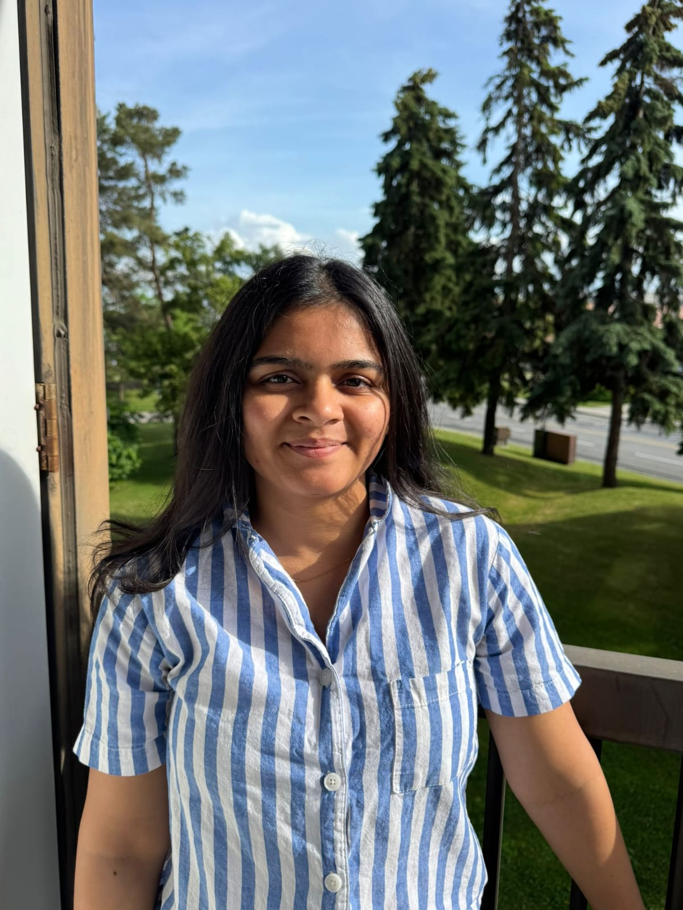

Registered Physiotherapist with a patient-focused care approach.
Drashti Chauhan brings compassionate clinical reasoning, clear rehabilitation guidance and evidence-based virtual or in-home physiotherapy for Ottawa patients.
Drashti Chauhan
Registered Physiotherapist
I help Ottawa patients rebuild confidence in movement by delivering empathetic, evidence-led physiotherapy care in virtual appointments or in-home visits.
Registered with the College of Physiotherapists of Ontario, I design rehabilitation plans that match your symptoms, lifestyle and home routines.

Clinical strengths built around recovery, balance and functional movement.
Every step of care is anchored in practical education, patient trust and a measurable plan for returning to daily life with less pain.
6+ years working in long-term care, private practice and home-based rehab.
Bachelor of Physiotherapy, India. Additional training in pelvic health, TMJ and vestibular rehabilitation.
Patient-centered in-home, virtual and post-surgical physiotherapy support.
Specialty pathways for Ottawa patients.
These care areas are designed for people who need precision, empathy and a rehabilitation plan that respects the realities of their daily life.
Patient stories, community involvement and future education.
Quality care is built on trust, local engagement and patient outcomes that feel practical and sustainable.
“Drashti listened, adapted exercises to my home, and guided me gently through post-surgery rehab. I felt supported every step of the way.”
– Ottawa senior after hip replacement“Her calm approach and clear explanations made virtual appointments feel personal, especially when I was nervous about my pelvic floor recovery.”
– New mother in KanataCommunity involvement
Drashti contributes to local education by offering injury prevention guidance, women's health awareness and practical home exercise coaching to Ottawa families and seniors.
Home exercise and pain-relief tips
Placeholder for short educational video content, such as safe core exercises, balance training and posture strategies.
Request video guidance